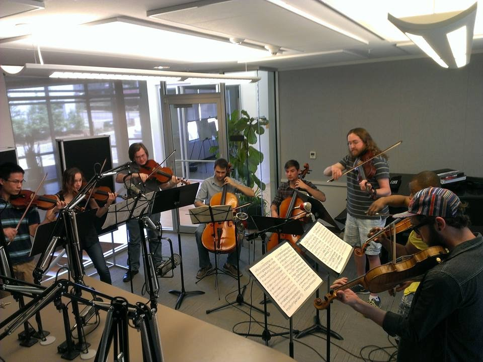
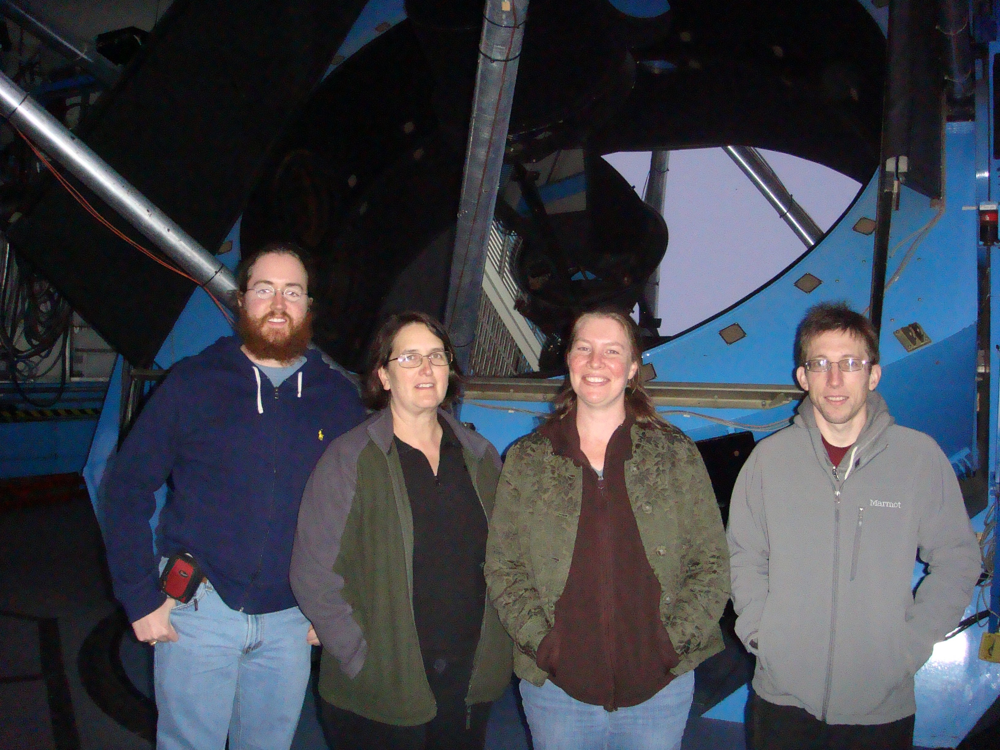
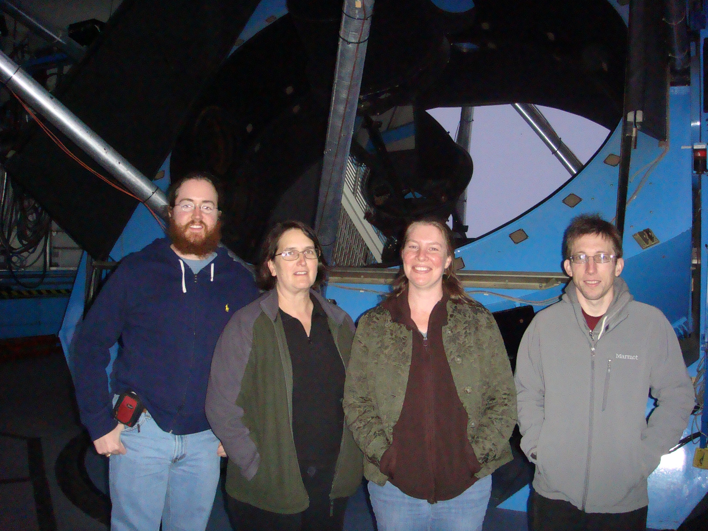

In the News
Davis et al. (2017)
- Self-authored Media
- July 2017, Swinburne Media Release: "Black Hole Science Made Child's Play"
- UK Version (MNRAS): "Spiral Arms Allow School Children to Weigh Black Holes"
- Australasian Science: "How You Can Weigh Weigh Black Holes"
- English Press
- PHYS.ORG, IFL Science, Dave Reneke's World of Space and Astronomy, Gizmodo, Science Daily, AZO Quantum, COSMOS Magazine, Space Daily, Science Newsline, ineffableisland.com, MS-CHAT.COM, Long Room, Across the Universe, AlphaGalileo, Health Medicine Network, EurekAlert, sciencesprings, Kynplex, & Astro Watch.
- Non-English Press
- Greek1, Greek2, Greek3, Italian1, Italian2, Italian3, German, Dutch1, Dutch2, Dutch3, Czech, Polish, Spanish, Portuguese, Vietnamese1, Vietnamese2, Vietnamese3, Vietnamese4, Vietnamese5, Vietnamese6, Indonesian, & Japanese.
- Radio

Pour-Imani et al. (2016)
- Press
Gods Amongst the Trees. April 5, 2016

From left to right: Ryan Cockerham, Katy Henriksen, Jennine Wager, Miroslava Panayotova, Lia Uribe, Er-gene Kahng, and Ben Davis.
"KUAF 91.3 FM NPR - Of Note for Friday, August 28, 2015: Worker's Union Ensemble to Play at Nightbird Books"

From left to right: Ben Davis, Ryan Cockerham, Er-gene Kahng, and Larry Rubin.
Workers, Unite @ Nightbird Books
The Galena Sentinel Times: "Out of this World" by David Nelson (2015)

Pictured here with my doctoral advisor, Dr. Julia Kennefick.
The Galena Sentinel Times: "Davis Receives His Doctorate of Philosophy" by David Nelson (2015)

Surviving Apollo 13 astronauts (Fred Haise & Jim Lovell) and flight director (Gene Kranz), 45 years and 6 days after splashdown of the Odyssey. From the left to right: Gene Kranz, Fred Haise, Ben Davis, and Jim Lovell (April 23, 2015).
The Seven Last Words of Christ (Good Friday, April 3, 2015)

KUAF 91.3 FM NPR - Of Note with Katy Henriksen: "Four Violins, Two Violas and Two Cellos Inside the Firmin-Garner Performance Studio" (April 30, 2014)
From the left, moving clockwise: Andrew Chu, Catalina Barraza, Andrew Thompson, Patrick Bellah, Ronald Juzeler, Ben Davis, Brice Smith, and Baron Lyle.
University of Arkansas News: "Physicists Awarded Telescope Time at Kitt Peak National Observatory" (2013)
 

Top: Kitt Peak National Observatory. Middle: Ben Davis, Julia Kennefick, Amanda Schilling, and Scott Barrows in front of the WIYN 3.5 m. Bottom: WIYN 3.5 m control room.
University of Arkansas News: "Winners Announced for From Abstract to Contract: Graduate Student Research Competition" (2012)

Chancellor Gearhart and Provost Gaber honored students and mentors who competed in the Graduate Student Research Competition.